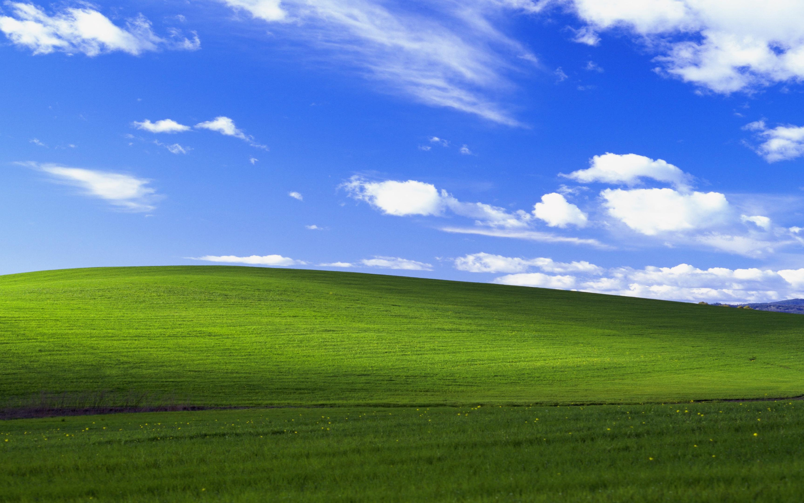

Hi, Welcome to my neocities page
My name is Anubhav lostglory. I wanna add more in this site
but currently I am out of ideas. Max time I am chill in steam
playing CS-go or terraria. Currently I am active in Lastfm too. I
like that site so much. I am thinking about showing music status
in this site too.
you add me through my socials